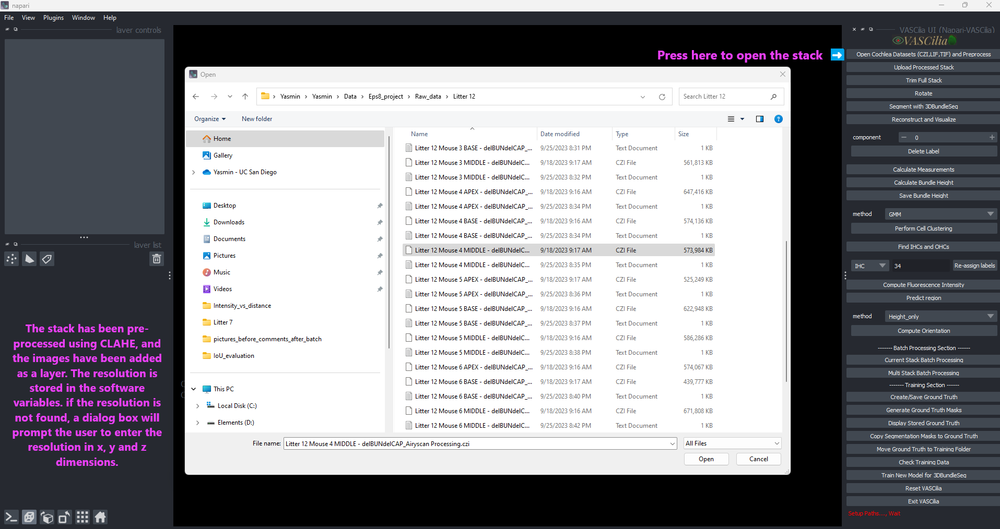
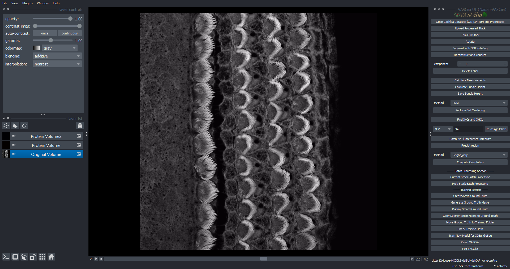

Open Image#
The Open Image feature in VASCilia enables users to load, preprocess, and analyze cochlear datasets in .czi, .lif, and .tif file formats. This feature provides tools for file handling, preprocessing, resolution management, and organized data output.
Key Features#
Supported File Formats: - CZI: Zeiss confocal images. - LIF: Leica Image File format. - TIF: Tagged Image File format.
Preprocessing Capabilities: - Applies CLAHE (Contrast Limited Adaptive Histogram Equalization) for improved contrast. - Resizes or pads images to ensure consistent dimensions. - Converts image stacks to RGB format.
Physical Resolution Management: - Automatically extracts resolution data (X, Y, Z) from file metadata. - Prompts users to input resolution manually if metadata is unavailable.
Error and Path Handling: - Validates configuration paths in config.json. - Provides clear error messages for missing or invalid paths.
Batch Processing: - Supports single or multiple dataset loading for streamlined analysis.
Organized Outputs: - Saves data in structured folders: - processed_data: ‘full_stack_raw_images’ folder
—
Differences in File Handling#
Each file format is handled differently based on structure and metadata availability.
# .czi (Zeiss Confocal Images)
Channel Support:
Reads two channels by default, configured in config.json as:
"green_channel": 0, "red_channel": 1, "blue_channel": -1
Additional channels are configurable:
blue_channel: 2 will read the third channel as blue.
blue_channel: 4 will read the fourth channel as blue.
Workflow:
Extracts image data and combines red, green, and blue channels into an RGB stack.
Applies CLAHE to enhance contrast.
# .lif (Leica Image Format)
Channel Support:
Processes a single channel (typically the green channel).
Workflow:
Processes the second image stack by default if multiple stacks exist.
Prompts for manual resolution input if metadata is unavailable.
Separates the green channel for processing and saves the enhanced stack.
# .tif (Tagged Image File Format)
Channel Handling:
Supports both 3D (frames, height, width) and 4D (frames, channels, height, width) datasets:
For 3D, assumes the green channel and initializes empty red and blue channels.
For 4D, reads channels based on the config.json file.
Workflow:
Combines channels into RGB format for each frame.
Applies CLAHE to each channel individually for enhanced contrast.
—
Summary of File Handling#
File Format |
Channel Support |
Resolution Handling |
Preprocessing Features |
|---|---|---|---|
.czi |
Configurable (2 by default), 3 if blue_channel in config.json is not -1 |
Extracted automatically |
CLAHE, resizing, padding |
.lif |
1 (green channel only) |
Requires user input |
CLAHE, resizing, padding |
.tif |
Configurable (1 for 3D, multiple for 4D) based on “green_channel”:0, “red_channel”: 1, “blue_channel”: 2 in config.json |
Requires user input |
CLAHE, resizing, padding |
—
Handling Padding and Resizing#
VASCilia includes functionality for resizing and padding image stacks during preprocessing. These settings are configurable in the config.json file.
### Configuration Options
{
"flag_to_resize": false,
"flag_to_pad": false,
"resize_dimension": 1200,
"pad_dimension": 1500
}
`flag_to_resize`: - If true, resizes images smaller than resize_dimension while maintaining the aspect ratio.
`flag_to_pad`: - If true, pads images to ensure they meet the pad_dimension.
`resize_dimension`: - Target dimension for resizing, applied to the smaller of the height or width.
`pad_dimension`: - Final dimensions for padded images.
### Resizing Workflow - If flag_to_resize is enabled, the smaller dimension is scaled to match resize_dimension while maintaining the aspect ratio.
scale_factor = resize_dimension / min(height, width)
new_height = int(height * scale_factor)
new_width = int(width * scale_factor)
### Padding Workflow - If flag_to_pad is enabled, black padding is added equally to all sides to meet the pad_dimension.
pad_height = max(0, pad_dimension - new_height)
pad_width = max(0, pad_dimension - new_width)
padded_image = np.pad(
image_resized,
((pad_height // 2, pad_height - pad_height // 2), (pad_width // 2, pad_width - pad_width // 2), (0, 0)),
mode='constant'
)
—
Usage Instructions#
### Step 1: Load an Image - Use the Open Image button to select a file. - If a stack is already loaded, click Reset VASCilia to start a new session.
### Step 2: Process the Stack - Supported formats: .czi, .lif, .tif. - Preprocessing includes normalization, CLAHE, resizing, and padding.
### Step 3: Save Results - Processed images are saved in the processed_data folder.
Extending the Functionality#
To add or modify functionality, edit the following file: - open_cochlea_action.py
—
—
